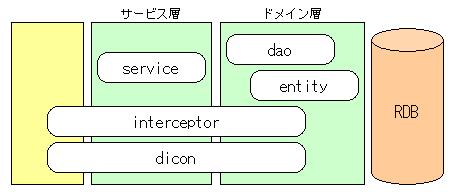

|
 |
|||||
ディレクトリ構成s2base.php5-version.zip を解凍すると次のディレクトリが展開されます。 s2base.php5 |-- app ・・・ アプリケーション本体格納ディレクトリ |-- config ・・・ 設定ファイル保存ディレクトリ |-- lib ・・・ ライブラリ関連ディレクトリ |-- public ・・・ WEB公開ディレクトリ |-- test ・・・ テスト用ディレクトリ |-- var ・・・ ログ・キャッシュディレクトリ `-- vendor ・・・ 外部フレームワーク、ライブラリ等との連携モジュールpublicディレクトリは、Smarty と組合わせる場合に使用します。PRADOでは使用しません。 PRADOアプリケーションディレクトリ構成S2Baseでの開発はモジュール単位で行います。module コマンドを実行しモジュール名を「Default」とすると、Web公開ディレクトリ直下に以下の構成のPRADOアプリケーションディレクトリを作成します。 public_html |-- default | |-- assets ・・・画像等の各種リソースファイル群を格納します。 | |-- index.php ・・・PRADOアプリケーションのエントリースクリプトです。 | |-- protected ・・・スクリプトファイル群を格納します。 | |-- application.xml ・・・PRADOアプリケーションの設定ファイルです。 | |-- dicon ・・・各ページとS2Baseモジュールを連携させるdiconファイル群を格納します。 | |-- pages ・・・ページクラスファイルとページテンプレートファイル群を格納します。 | |-- runtime ・・・PRADOアプリケーションの実行時情報（セッション等）を格納します。 | |-- prado ・・・PRADOフレームワークです。 | | S2Baseモジュールディレクトリ構成S2Baseでの開発はモジュール単位で行います。module コマンドを実行しモジュール名を「Default」とすると、次のディレクトリ群が app/modules ディレクトリと test/modules ディレクトリに作成されます。
s2base.php5
|-- app
| |-- ・・・
| |-- modules
| | `-- Default
| | |-- dao
| |-- dicon
| |-- entity
| |-- interceptor
| `-- service
|-- test
| `-- modules
| `-- Default
| |-- dao
`-- service
moduleコマンドにて作成されるディレクトリ群は、次のレイヤイメージに対応します。
 一番左の黄色のボックスは、S2Baseで作成したモジュールを使用するレイヤで、WEB層やCLI層となります。
|
||
| © Copyright The Seasar Project and the others 2005-2006, all rights reserved. |